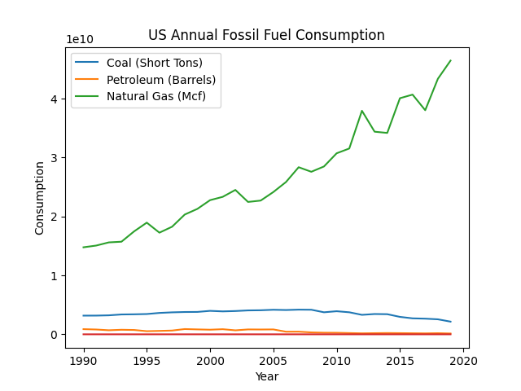

The graphic above shows interesting trends in US power production and highlights US reliance on fossil fuels.
This graph depicts consumption of US fossil fuels. As clearly shown, reliance on Natural Gas has steadily increased over the past 30 years.